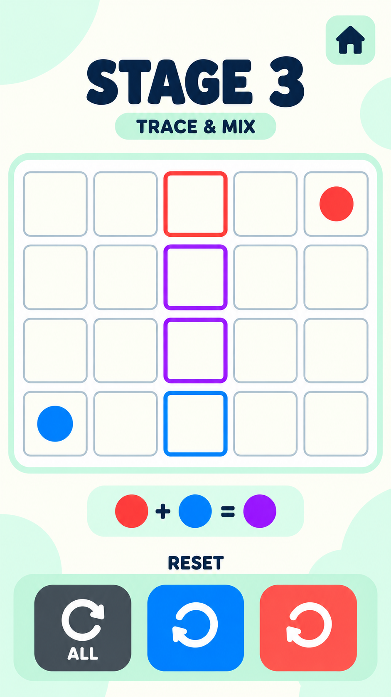
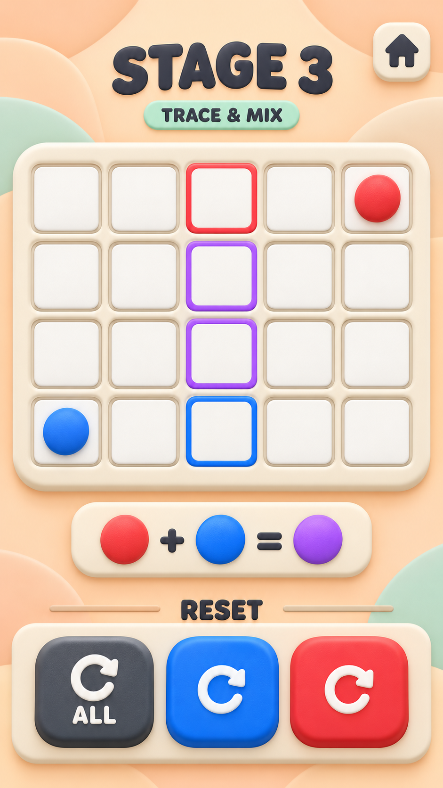

2D 01
2D A / Clean Pop
余白と明るい配色で、盤面の見やすさを優先したフラットな2D。

2Dを2案、3D風を2案。5×4の盤面、混色ガイド、ホーム、色別リセットを共通に、色・輪郭・素材感を比較するステージ画面案です。
余白と明るい配色で、盤面の見やすさを優先したフラットな2D。

太い輪郭線とくっきりした影で、遊び心を強めた2D。

光沢・丸み・厚みで、押したくなる手触りを表現した3D風。

マットな素材と柔らかい陰影で、落ち着いた親しみやすさを出した3D風。
